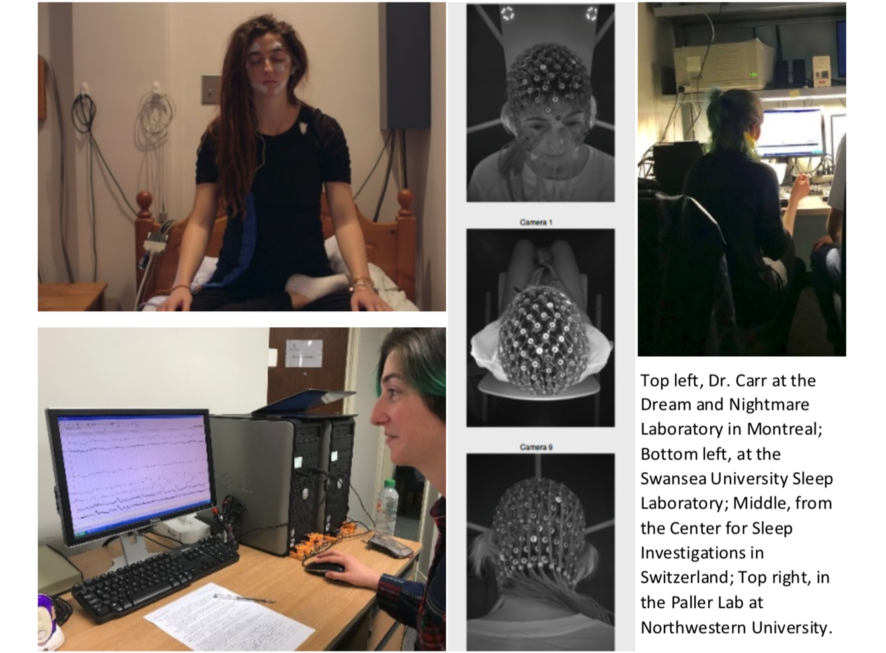

The First International Dream x Engineering (DxE) Workshop, hosted at the MIT Media Laboratory in January 2019, began as a collaboration between sleep and dream researcher Dr. Michelle Carr, and dream engineers in the MIT Media Laboratory Fluid Interfaces group led by Dr. Pattie Maes, Professor in Media Arts and Sciences, including students Adam Haar Horowitz and Judith Amores.
Dr. Carr, currently a Postdoctoral Associate in the University of Rochester Sleep and Neurophysiology Laboratory, initially reached out to the group in early 2018 with an interest in using their dream engineering technology in her own sleep laboratory studies. In the Fluid Interfaces group, a wealth of innovative devices have been developed with dream engineering applications.
For instance, the Masca device detects rapid eye movements during sleep and triggers awakenings for dream reports. The Dormio device uses sensors on a sleeper’s fingers that detect muscle flexion, heart rate, and skin conductance, then uses these signals to prompt the sleeper to incubate specific dream content at sleep onset. The Essence device has evolved over several years and can be worn as a necklace or attached to a nightstand; the device can be programmed to release a desired scent when the user is asleep and dreaming. MoveU is a simple electrical stimulation device worn on the neck that can simulate shifts in balance, and could be a wearable alternative to induce rocking motions that ease sleep onset. PhysioHMD is a device that can detect all of the necessary signals for scoring sleep, but in a flexible, comfortable, and portable mask, originally designed to comfortably fit under Virtual Reality headsets. Finally, Frisson uses cascading electrical stimulation at specific points along the back, to induce the sensation of chills on demand. All of these devices are designed to be low-cost and portable, and open exiting new avenues of sleep and dream experimentation.
But what started as a personal collaboration between Dr. Carr and the Fluid Interfaces group organically grew into a concerted effort, bringing together a wide-ranging group of dream scientists and engineers to jumpstart the field of Dream Engineering. And Dr. Carr has deep roots in the field; after working as an undergraduate in the Rochester Sleep Lab, she has trained in sleep laboratories around the world, including graduate work at the Dream and Nightmare Laboratory in Montreal with Dr. Tore Nielsen, postdoctoral training with Prof. Mark Blagrove at the Swansea University Sleep Laboratory, and numerous research visits and collaborations: with Dr. Martin Dresler at the Donders Institute in the Netherlands; Dr. Francesca Siclari at the Center for Investigation and Research in Sleep in Switzerland; Dr. Katja Valli at the Turku Centre for Cognitive Neuroscience; and Dr. Ken Paller at Northwestern University in Chicago.

Many of these researchers shared a similar interest in engineering dreams, conducting laboratory studies that ranged from inducing lucid dreams with sensory stimulation, manipulating dreamed body movement through electrical brain stimulation, or using Virtual Reality to influence dream content. Thus, after obtaining a grant from the British Psychological Society to visit the Media Laboratory in January of 2019, Dr. Carr reached out to more than 30 sleep and dream researchers around the world and curated the scientific program for the first DxE workshop. At MIT, Dr. Maes and the Fluid Interfaces group developed a cutting-edge technology program for the workshop, preparing for and inviting tech speakers and demo presenters from the Media Laboratory and beyond.
For two days at the end of January 2019, worlds collided between dream laboratory researchers and engineers. There is so much that science is unearthing about sleep and dreams, and their importance for learning, creativity, and emotional well-being. The energy and inspiration at the workshop burst from a desire to create better tools to help individuals, both within and beyond the sleep laboratory. The connections developed at the workshop resulted in numerous collaborations between dream scientists and engineers and suggest an exciting future for the field of Dream Engineering.
Following from the success of the workshop, a Special Issue on the new science of Dream Engineering has recently been published with the journal Consciousness and Cognition. Dr. Carr is the Managing Guest Editor for the issue, with Dr. Maes, Horowitz, and Amores. The team also collaborated with Dr. Pedro Lopes at the University of Chicago and others from the Media Laboratory to publish a comprehensive theoretical review on the concept of Dream Engineering (Carr et al., 2020). The authors discuss how simple sensory technologies – borrowed from the fields of Human-Computer Interaction and Virtual Reality Simulation – can be applied to engineer dreams during sleep.
Check out thecollection of articles in the Special Issue to see what it’s all about!
Reference
Carr M, Haar A, Amores J, Lopes P, Bernal G, Vega T, Rosello O, Jain A, Maes P.
Dream
engineering: Simulating worlds
through sensory stimulation. Consciousness and Cognition. 2020;83:102955.